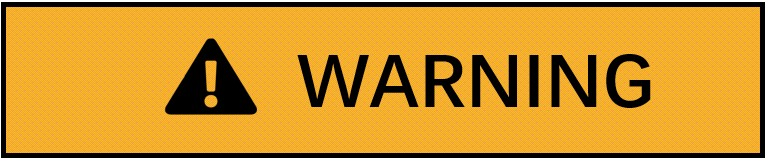
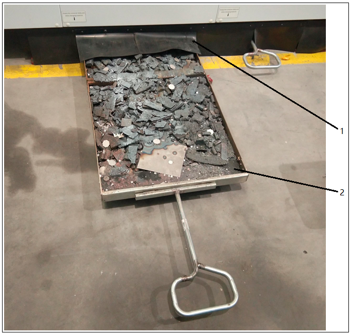

Empty the scrap bin and clean the loading area

8 operating hours
-
Industrial vacuum cleaner "Dust class M" or "Dust class H" in accordance with IEC/EN 60335-2-69 or similar.

Risk of injury from fire!
-
Empty the scrap bin before changing the material from aluminum/aluminum alloys to ferrous materials or vice versa.
-
Regardless of the materials processed: empty the scrap bin on a daily basis.
-
Clean the scrap bin insertion area below the machine extensively on a weekly basis.
During maintenance and repair work on the machine installation, the scrap bins may be set into motion on entering.
Danger of tripping when accessing the scrap bin.
Do not enter the scrap bins.
Before entering the work area, pull out the scrap bins.
-
Before changing the material from aluminum/aluminum alloys to ferrous materials or vice versa, the scrap bins and the loading area below the machine should always be cleaned.
-
The machine control detects whether a critical material change occurs based on the specified material. A message requesting the emptying of the scrap bins must be confirmed.
-
The cutting operation must not be resumed until all the scrap bins have been inserted into the machine. Operation of the system is only permitted with the scrap bins inserted.

Procedure
-
Pull out the scrap bins (2) completely in the Y direction or pull out segments one by one.
-
Empty all containers or use an industrial vacuum cleaner for suction.
-
Check the baffle and sealing curtain (1) on the collector and replace them if necessary.
-
Clean the scrap bin loading area below the machine carefully.
-
Push the collector into the stop position under the machine tool. The collector cannot protrude outward.